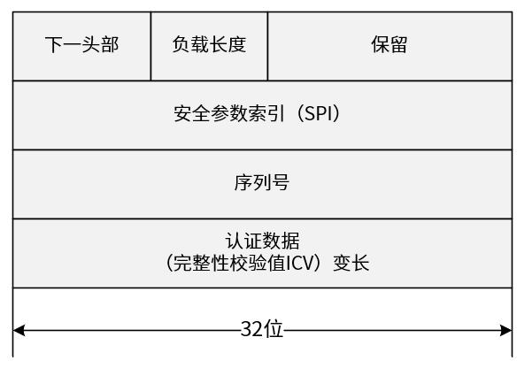
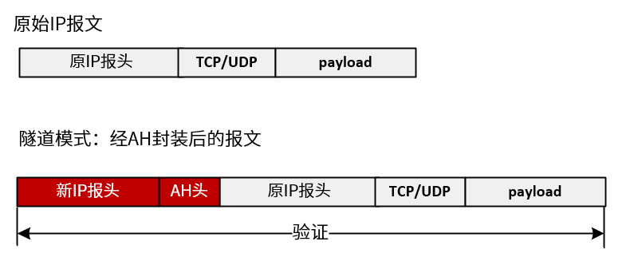
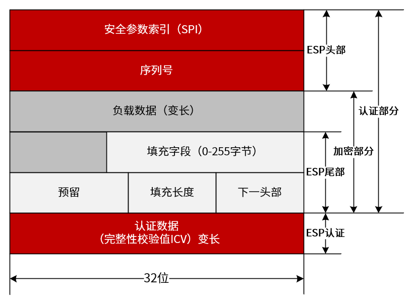
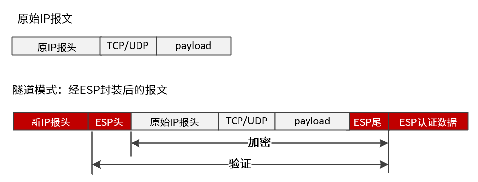
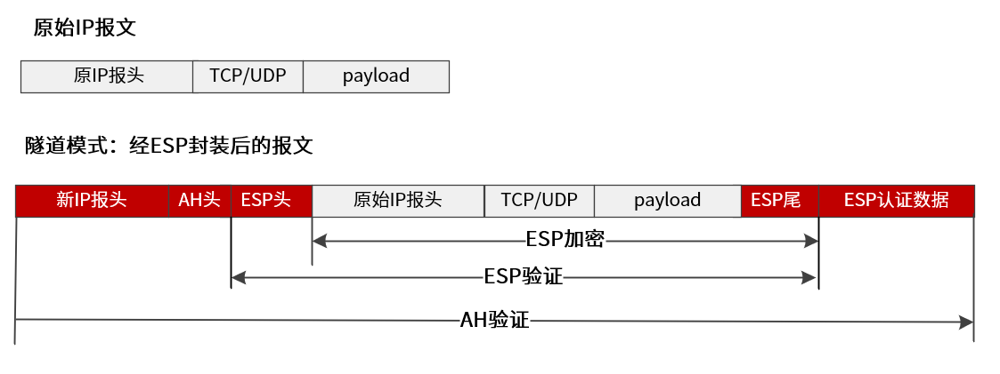
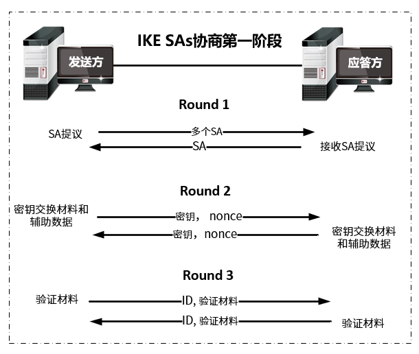
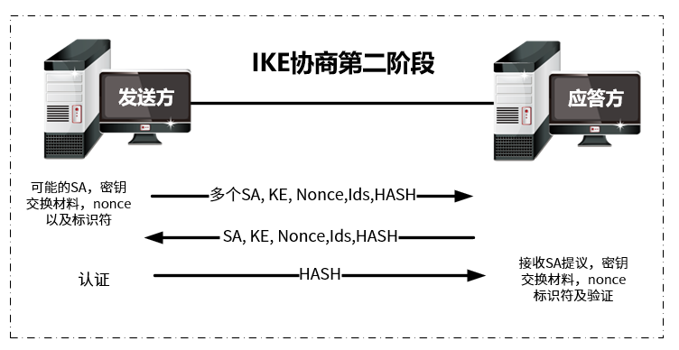

VPN（Virtual Private Network，虚拟私有网）是近年来随着Internet的广泛应用而迅速发展起来的一种新技术，用以实现在公用网络上构建虚拟专用网络，达到与专网同等的安全性。VPN在维护及价格上相对于专网而言占有极大的优势。“虚拟”指这种网络是一种逻辑上的网络，虚拟专用网可以帮助远程用户、公司分支机构、商业伙伴及供应商同公司的内部网建立可信的安全连接，保证数据的安全传输。
NGFW支持标准的IKE和IPSec协议，可以与天融信的IPSec VPN以及其他支持IKE标准协议的IPSec VPN设备建立标准的IPSec VPN隧道。此外，NGFW还支持对通过VPN隧道内的网络流量进行访问控制、流量带宽控制及NAT处理，甚至还可对通过VPN隧道的流量进行病毒查杀。
IPSec VPN特点
IPSec（IP Security）协议作为网络层隧道协议，是由IETF制定的一系列协议，它为IP数据报文提供了高质量、可互操作、基于密码学的安全保障。特定的通信方之间在IP层通过加密与数据源验证等方式，来保证数据报文在网络上传输时的私有性、完整性、真实性和防重放。IPSec VPN可实现功能包括：
l保证数据机密性（Confidentiality）：在传输数据包之前通过加密算法将数据包加密，只有真正的接收者才可对该数据包进行解密，进而查看其内容，以保证数据的机密性。
l保证数据完整性（Data integrity）：在目的地通过验证算法验证数据包，以保证该数据包在传输过程中有任何数据被篡改或丢失都能被检测出来。
l保证数据真实性（Data authentication）：在IPSec通信之前，通信双方先认证对方身份的合法性，身份验证通过之后才能通信，验证数据源，以保证数据来自真实的发送者。
l防重放（Anti-replay）：防止恶意用户通过重复发送捕获到的数据包进行攻击，即接收方通过拒绝旧的或重复的数据包抵御重放攻击。
IPSec VPN基本概念
IPSec VPN是采用IPSec（IP Security）协议实现基于公网基础设施安全传输数据的一种隧道技术。IPSec协议并非为一个单独的协议，而是由Internet工程任务组（IETF）制定的一组安全协议套件，为确保网络层IP数据通信的安全，IPSec VPN体系机构包括：安全联盟、安全协议、密钥管理、操作模式、验证算法、加密算法和安全策略等。
1．安全联盟
安全联盟SA（Security Association，安全联盟）是通信对等体间对某些要素的约定，包括：安全协议（AH、ESP或者两者结合使用）、协议的操作模式（传输模式和隧道模式）、加密算法、验证算法、保护数据的共享密钥以及密钥的生存周期等。
安全联盟是单向的，两个对等体之间的双向通信，最少需要两个安全联盟来分别对两个方向的数据流进行安全保护。同时，如果希望同时使用AH和ESP来保护对等体间的数据流，则分别需要两个SA，一个用于AH，另一个用于ESP。
安全联盟由一个三元组来唯一标识，这个三元组包括SPI（Security Parameter Index，安全参数索引）、目的IP地址和安全协议号（AH为51，ESP为50），其中，SPI是为唯一标识SA而生成的一个32比特的数值，它在AH和ESP头中传输。
2．安全联盟的协商方式
建立安全联盟的协商方式包括两种：一种是手工方式（manual），一种是IKE自动协商（isakmp）方式。前者配置比较复杂，创建安全联盟所需的全部信息都必须手工配置，而且IPSec的一些高级特性（例如定时更新密钥）不被支持，但优点是可以不依赖IKE而单独实现IPSec功能。后者则相对比较简单，只需要配置好IKE协商安全策略的信息，由IKE自动协商来创建和维护安全联盟。
当与NGFW进行通信的对等体设备数量较少时，或是在小型静态环境中，手工配置安全联盟是可行的。对于中、大型的动态网络环境中，推荐使用IKE协商建立安全联盟。
3．操作模式与安全协议
IPSec VPN支持的操作模式包括：传输模式、隧道模式，因NGFW应用场景为部署于网络边界，NGFW仅支持IPSec VPN的隧道模式，不支持IPSec VPN的传输模式。IPSec提供了两种安全协议用以保护网络通信：AH（Authentication Header，认证头）和ESP（Encapsulating Security Payload，封装安全载荷）。
数据包需经过IPSec VPN隧道传输时，NGFW在发送数据包之前会通过IPSec协议对数据包进行封装，AH或ESP插在原始IP报头之前，另外生成一个新头放到AH或ESP之前。
1）AH协议
AH是报文头验证协议，为基于IP的传输层协议，主要提供数据源验证、数据完整性校验和防报文重放功能，可对整个IP数据包进行完整性验证（将数据包在传输过程中可能会发生变化的字段置0），但并不加密所保护的数据包。报头结构如下图所示。

l下一头部：标识AH报头后面的负载类型。传输模式下，为TCP、UDP或ESP协议的编号，隧道模式下，为IP或ESP协议的编号。
l安全参数索引（SPI）：与目的IP地址和安全协议一起唯一标识IPSec SA，接收端设备通过SPI查找安全联盟，以解密IPSec协议保护的数据。
l序列号（32位）：唯一标识数据包，可用于防重放攻击。
l认证数据：包含数据完整性校验值ICV，用于接收方进行完整性校验时对比，以确认数据在传输过程中是否被篡改或丢失。
NGFW通过AH协议封装数据报文时，如下图所示。

2）ESP协议
ESP是封装安全载荷协议，除了提供AH协议的所有功能外（但其数据完整性校验只针对ESP报头与ESP报尾之间数据），还可对IP数据包中ESP报头之后与ESP报尾之间的数据进行加密。其报头结构如下图所示。

l安全参数索引（SPI）：与目的IP地址和安全协议一起唯一标识IPSec SA。
l序列号（32位）：唯一标识数据包，可用于防重放攻击。
l下一头部：标识ESP报头后面的负载类型，传输模式下，为TCP或UDP协议的编号，隧道模式下，为IP协议的编号。
l认证数据：包含数据完整性校验值ICV，用于接收方进行完整性校验时对比，以确认数据在传输过程中是否被篡改或丢失。
NGFW通过ESP协议封装数据报文时，如下图所示。

3）AH协议+ESP协议
IPSec VPN同时采用AH和ESP协议时，NGFW处理数据报文时既根据AH协议对数据报文进行处理，也根据ESP协议对数据报文进行处理。AH和ESP协议封装报文格式如下图所示。

因AH协议不提供加密功能，ESP协议不对数据包的报头进行验证，在安全性要求较高的应用场景中，建议结合AH协议和ESP协议处理数据报文。
4．验证算法与加密算法
1）验证算法
AH和ESP都能够对IP报文的完整性进行验证，以判别报文在传输过程中是否被篡改。验证算法的实现主要是通过杂凑函数：杂凑函数是一种能够接受任意长的消息输入，并产生固定长度输出的算法，该输出称为消息摘要。IPSec对等体计算摘要，如果两个摘要是相同的，则表示报文是完整未经篡改的；否则，表明报文在传输过程中已发生改变。一般来说IPSec使用两种验证算法：
lMD5：MD5通过输入任意长度的消息，产生128bit的消息摘要。
lSHA-1：SHA-1通过输入长度小于2的64次方比特的消息，产生160bit的消息摘要。SHA-1的摘要长于MD5，因而是更安全的。
2）加密算法
ESP能够对IP报文内容进行加密保护，防止报文内容在传输过程中被窥探。加密算法实现主要通过对称密钥系统，它使用相同的密钥对数据进行加密和解密。一般来说IPSec使用两种加密算法：
lDES：使用56bit的密钥对一个64bit的明文块进行加密。
l3DES：使用三个56bit的DES密钥（共168bit密钥）对明文进行加密。
无疑，3DES具有更高的安全性，但其加密数据的速度要比DES慢得多。
5．IKE
IKE协议用于自动协商AH和ESP所使用的密码算法，并将算法所需的必备密钥放到恰当位置。为简化IPSec的使用和管理，IPSec可以通过IKE（Internet Key Exchange，因特网密钥交换协议）提供自动协商交换密钥、建立和维护安全联盟的服务。
IKE协商过程
IPSec的安全联盟可以通过手工配置的方式建立，但是当网络中节点增多时，手工配置将非常困难，而且难以保证安全性。这时就要使用IKE（Internet Key Exchange，因特网密钥交换）自动地进行安全联盟建立与密钥交换的过程。
IKE协议是建立在由Internet安全联盟和密钥管理协议ISAKMP（Internet Security Association and Key Management Protocol）定义的框架上。它能够为IPSec提供自动协商交换密钥、建立安全联盟的服务，以简化IPSec的使用和管理。
IKE具有一套自保护机制，可以在不安全的网络上安全地分发密钥、验证身份、建立IPSec安全联盟。
IKE使用了两个阶段为IPSec进行密钥协商并建立安全联盟：
第一阶段：通信各方彼此间建立了一个已通过身份验证和安全保护的通道，此阶段的交换建立了一个ISAKMP安全联盟，即ISAKMP SA（也可称IKE SA）。下图为第一阶段IKE主模式协商过程。

第二阶段：利用第一阶段建立的安全通道为IPSec协商安全服务，即为IPSec协商具体的安全联盟，建立IPSec SA，IPSec SA用于最终的IP数据安全传送。下图为第二阶段IKE协商基本过程。
